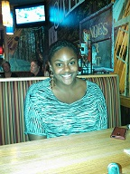

My summer project is about healthcare services.
The goal of this project is to create a "diagnosis database". This is a database in which symptoms a patient is feeling can be entered and a diagnosis will be given. Along with the diagnosis, a treatment is provided as well.This database will take the imputed symptoms and produce the most logical diagnosis and treatment for said diagnosis in a matter of seconds.
One day I hope to successfully create and implement this project into the medical field.
My name is Jazmyn Scott. I am currently a sophmore at Fisk University majoring in psychology with a focus towards medicine. I have always had an interest in the medical field, specifically the areas most conserning patient care and surgical procedures. Growing up in a constantly chaning environment has led me to believe change is key to a progressive society. It is this belief that I wish to apply to the medical field creating quicker and more efficient health care.
